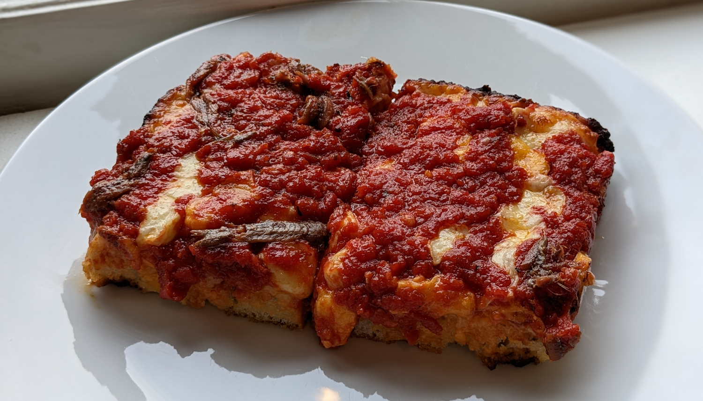

Detroit-Style Pizza

Author: King Arthur Baking |
Cooked: October 29, 2022
Yields: 4 Servings | Prep Time: 35 Minutes | Cook Time: 35 Minutes
Ingredients
- 300g unbleached bread flour
- 1 1/2 tsp instant yeast
- 1 tsp salt
- 1 c. lukewarm water
- Olive oil, for greasing pan --------------------------
- 2 Tbs olive oil
- 2 garlic cloves, finely chopped
- 1 tsp salt
- 1/2 tsp onion powder
- 1/2 tsp basil
- 1/2 tsp oregano
- 1/2 tsp red pepper flakes
- 28-oz can crushed tomatoes
- 1 Tbs sugar --------------------------
- Pepperoni, sliced, optional
- Other toppings, optional
- 6 oz mozzarella cheese, diced into 1/2" cubes
- 6 oz mild cheddar cheese, diced into 1/2" cubes
Dough
Sauce
Toppings
Directions
- Mix all dough ingredients together (minus the oil) by hand or in a stand mixer with the paddle attachment until a shaggy dough forms. Cover with a damp towel and let sit for 10 minutes.
- In a stand mixer fitted with the dough hook (or by hand), mix the dough until it becomes smooth and elastic and passes the windowpane test.
- Form the dough into a ball, place in a lightly oiled bowl covered with a damp towel, and allow to rest until doubled in size, about 2 hours.
- Drizzle 1-2 Tbs olive oil into a metal 9" x 13" pan. Gently stretch the dough evenly into the edges and corners of the pan. It may shrink back, but that's okay. Do the best you can. Allow to relax for 15-20 minutes.
- Stretch the dough one more time into the edges and corners (it should be much easier this time). Make sure that the dough has an even thickness. Cover the dough with a damp towel and allow to rest for 30-45 minutes while you make the sauce. --------------------------
Dough
- While the dough rests, heat the olive oil in a saucepan over medium heat.
- Add garlic and spices cooking until fragrant, about 30 seconds.
- Add tomatoes and sugar, bring to a simmer, and cook until the juices have reduced significantly and there are about 3 c. of sauce remaining. This should take about 20 minutes.
- Season to taste. If the sauce is too acidic, add some more sugar. --------------------------
Sauce
- Preheat oven to 500°F.
- Gently press dimples into dough with fingers and pop any large air bubbles.
- Add a layer of pepperoni to the dough and any other preferred toppings.
- Add the cheese cubes making sure to spread them to the edges of the pan.
- Evenly spread the sauce over the top of the pizza.
- Bake until the edges have turned nearly black, about 12-15 minutes.
- Remove from oven and run spatula around the edges to loosen it from the pan. Let sit for 10 minutes. Cut into 8 pieces and serve. --------------------------
Pizza
Additional Notes
- It seems that the traditional way to assemble is with all toppings under the cheese which I've written here. When we made it, we had the pepperoni under the cheese and baked the pizza for 10 minutes. Then we took it out, added additional toppings, and continued to cook until the edges crisped up. Not sure which is better, but I think either would work.
- We added banana peppers to one quarter and anchovies to another quarter. The anchovies were good, but I wouldn't recommend them with the pepperoni as it was a bit too salty with them both.
- I could see this being really good with pepperoni and jalapeños.